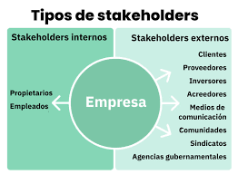

10.2. Stakeholders Clave en el Sector TIC
En las empresas de Tecnologías de la Información y Comunicación (TIC), los stakeholders juegan un papel fundamental en la estrategia, desarrollo e innovación. A continuación se detallan los principales grupos de interés:

1. Empleados
- Perfil: Desarrolladores, ingenieros, equipos de QA y soporte.
- Impacto: Motor de innovación y calidad técnica.
- Gestión: Formación continua, clima laboral positivo.
2. Clientes
- Perfil: Usuarios finales, empresas contratantes.
- Impacto: Definición de requisitos y validación.
- Gestión: Encuestas de satisfacción, ciclos de feedback.
3. Proveedores
- Perfil: Cloud providers, fabricantes de hardware.
- Impacto: Cadena de suministro tecnológico.
- Gestión: Acuerdos SLA, evaluación continua.
4. Inversores
- Perfil: Venture capital, business angels.
- Impacto: Viabilidad financiera y escalamiento.
- Gestión: Reportes trimestrales, roadmaps claros.
Otros Stakeholders Relevantes
| Grupo | Interés | Nivel de Influencia |
|---|---|---|
| Sociedad | Impacto social de la tecnología | Medio |
| Administración Pública | Cumplimiento normativo (LOPD, GDPR) | Alto |
| Competencia | Benchmarking y posicionamiento | Medio |
Consejo estratégico: En TIC, los empleados y clientes suelen ser stakeholders de alto poder e interés.
Prioriza su gestión con herramientas ágiles (Jira, CRM) y comunicación transparente.